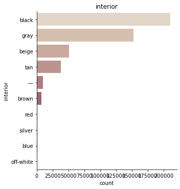
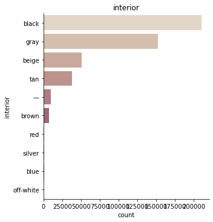

Data analysis¶
Here you can find the exploratory data analysis (EDA) to understand more about the “used car prices”-dataset.¶
import pandas as pd
import numpy as np
%matplotlib inline
import seaborn as sns
import matplotlib.pyplot as plt
import dataset¶
df = pd.read_csv("car_prices.csv", on_bad_lines="skip")
---------------------------------------------------------------------------
FileNotFoundError Traceback (most recent call last)
/var/folders/9r/ym9jxwt15b70q43zrdvqgmdh0000gn/T/ipykernel_18744/2638046699.py in <module>
----> 1 df = pd.read_csv("car_prices.csv", on_bad_lines="skip")
/opt/anaconda3/lib/python3.7/site-packages/pandas/util/_decorators.py in wrapper(*args, **kwargs)
309 stacklevel=stacklevel,
310 )
--> 311 return func(*args, **kwargs)
312
313 return wrapper
/opt/anaconda3/lib/python3.7/site-packages/pandas/io/parsers/readers.py in read_csv(filepath_or_buffer, sep, delimiter, header, names, index_col, usecols, squeeze, prefix, mangle_dupe_cols, dtype, engine, converters, true_values, false_values, skipinitialspace, skiprows, skipfooter, nrows, na_values, keep_default_na, na_filter, verbose, skip_blank_lines, parse_dates, infer_datetime_format, keep_date_col, date_parser, dayfirst, cache_dates, iterator, chunksize, compression, thousands, decimal, lineterminator, quotechar, quoting, doublequote, escapechar, comment, encoding, encoding_errors, dialect, error_bad_lines, warn_bad_lines, on_bad_lines, delim_whitespace, low_memory, memory_map, float_precision, storage_options)
584 kwds.update(kwds_defaults)
585
--> 586 return _read(filepath_or_buffer, kwds)
587
588
/opt/anaconda3/lib/python3.7/site-packages/pandas/io/parsers/readers.py in _read(filepath_or_buffer, kwds)
480
481 # Create the parser.
--> 482 parser = TextFileReader(filepath_or_buffer, **kwds)
483
484 if chunksize or iterator:
/opt/anaconda3/lib/python3.7/site-packages/pandas/io/parsers/readers.py in __init__(self, f, engine, **kwds)
809 self.options["has_index_names"] = kwds["has_index_names"]
810
--> 811 self._engine = self._make_engine(self.engine)
812
813 def close(self):
/opt/anaconda3/lib/python3.7/site-packages/pandas/io/parsers/readers.py in _make_engine(self, engine)
1038 )
1039 # error: Too many arguments for "ParserBase"
-> 1040 return mapping[engine](self.f, **self.options) # type: ignore[call-arg]
1041
1042 def _failover_to_python(self):
/opt/anaconda3/lib/python3.7/site-packages/pandas/io/parsers/c_parser_wrapper.py in __init__(self, src, **kwds)
49
50 # open handles
---> 51 self._open_handles(src, kwds)
52 assert self.handles is not None
53
/opt/anaconda3/lib/python3.7/site-packages/pandas/io/parsers/base_parser.py in _open_handles(self, src, kwds)
227 memory_map=kwds.get("memory_map", False),
228 storage_options=kwds.get("storage_options", None),
--> 229 errors=kwds.get("encoding_errors", "strict"),
230 )
231
/opt/anaconda3/lib/python3.7/site-packages/pandas/io/common.py in get_handle(path_or_buf, mode, encoding, compression, memory_map, is_text, errors, storage_options)
705 encoding=ioargs.encoding,
706 errors=errors,
--> 707 newline="",
708 )
709 else:
FileNotFoundError: [Errno 2] No such file or directory: 'car_prices.csv'
df.head(2)
| year | make | model | trim | body | transmission | vin | state | condition | odometer | color | interior | seller | mmr | sellingprice | saledate | |
|---|---|---|---|---|---|---|---|---|---|---|---|---|---|---|---|---|
| 0 | 2015 | Kia | Sorento | LX | SUV | automatic | 5xyktca69fg566472 | ca | 5.0 | 16639.0 | white | black | kia motors america, inc | 20500 | 21500 | Tue Dec 16 2014 12:30:00 GMT-0800 (PST) |
| 1 | 2015 | Kia | Sorento | LX | SUV | automatic | 5xyktca69fg561319 | ca | 5.0 | 9393.0 | white | beige | kia motors america, inc | 20800 | 21500 | Tue Dec 16 2014 12:30:00 GMT-0800 (PST) |
print(f"We have {len(df.index):,} observations and {len(df.columns)} columns in our dataset.")
We have 558,811 observations and 16 columns in our dataset.
df.columns
Index(['year', 'make', 'model', 'trim', 'body', 'transmission', 'vin', 'state',
'condition', 'odometer', 'color', 'interior', 'seller', 'mmr',
'sellingprice', 'saledate'],
dtype='object')
df.dtypes
year int64
make object
model object
trim object
body object
transmission object
vin object
state object
condition float64
odometer float64
color object
interior object
seller object
mmr int64
sellingprice int64
saledate object
dtype: object
df.info()
<class 'pandas.core.frame.DataFrame'>
RangeIndex: 558811 entries, 0 to 558810
Data columns (total 16 columns):
# Column Non-Null Count Dtype
--- ------ -------------- -----
0 year 558811 non-null int64
1 make 548510 non-null object
2 model 548412 non-null object
3 trim 548160 non-null object
4 body 545616 non-null object
5 transmission 493458 non-null object
6 vin 558811 non-null object
7 state 558811 non-null object
8 condition 547017 non-null float64
9 odometer 558717 non-null float64
10 color 558062 non-null object
11 interior 558062 non-null object
12 seller 558811 non-null object
13 mmr 558811 non-null int64
14 sellingprice 558811 non-null int64
15 saledate 558811 non-null object
dtypes: float64(2), int64(3), object(11)
memory usage: 68.2+ MB
df.dtypes
year int64
brand object
model object
type object
drivetrain object
state object
condition float64
miles float64
color object
interior object
seller object
sellingprice int64
saledate object
dtype: object
df.isna().sum()
year 0
brand 0
model 0
type 0
drivetrain 0
state 0
condition 0
miles 0
color 0
interior 0
seller 0
sellingprice 0
saledate 0
dtype: int64
Alles in lowercase umwandeln¶
Kategorial oder Numerisch?¶
year = categorial
brand = categorial
model = categorial
type = categorial
drivetrain = categorial
state = categorial
condition = categorial
miles = numeric
color = categorial
interior = categorial
seller = categorial
ratingprice = numeric
sellingprice = numeric
saledate = categorial
# In kategorische Variablen umwandeln:
for cat in ["year", "brand", "model", "type", "drivetrain", "state", "condition", "color", "interior", "seller", "saledate"]:
df[cat] = df[cat].astype("category")
df.dtypes
year category
brand category
model category
type category
drivetrain category
state category
condition category
miles float64
color category
interior category
seller category
sellingprice int64
saledate category
dtype: object
df.describe(include="category").T
| count | unique | top | freq | |
|---|---|---|---|---|
| year | 472336 | 26 | 2013 | 87474 |
| brand | 472336 | 53 | ford | 81014 |
| model | 472336 | 764 | altima | 16346 |
| type | 472336 | 45 | sedan | 211308 |
| drivetrain | 472336 | 2 | automatic | 455974 |
| state | 472336 | 34 | fl | 75243 |
| condition | 472336.0 | 41.0 | 1.9 | 36652.0 |
| color | 472336 | 20 | black | 93245 |
| interior | 472336 | 17 | black | 209870 |
| seller | 472336 | 11927 | ford motor credit company,llc | 17756 |
| saledate | 472336 | 3609 | Tue Feb 10 2015 01:30:00 GMT-0800 (PST) | 5004 |
df.describe()
| miles | sellingprice | |
|---|---|---|
| count | 472336.000000 | 472336.000000 |
| mean | 66701.070003 | 13690.403670 |
| std | 51939.183430 | 9612.962279 |
| min | 1.000000 | 1.000000 |
| 25% | 28137.000000 | 7200.000000 |
| 50% | 51084.000000 | 12200.000000 |
| 75% | 96589.000000 | 18200.000000 |
| max | 999999.000000 | 230000.000000 |
Variable lists¶
Furthermore, we prepare our data for the following processes of data splitting and building of data pipelines.
# list of all numerical data
list_num = df.select_dtypes(include=[np.number]).columns.tolist()
# list of all categorical data
list_cat = df.select_dtypes(include=['category']).columns.tolist()
print(list_num, list_cat)
['miles', 'sellingprice'] ['year', 'brand', 'model', 'type', 'drivetrain', 'state', 'condition', 'color', 'interior', 'seller', 'saledate']
# define outcome variable as y_label
y_label = 'sellingprice'
# select features
features = df.drop(columns=[y_label]).columns.tolist()
# create feature data for data splitting
X = df[features]
# list of numeric features
feat_num = X.select_dtypes(include=[np.number]).columns.tolist()
# list of categorical features
feat_cat = X.select_dtypes(include=['category']).columns.tolist()
# create response for data splitting
y = df[y_label]
print(feat_num)
['miles']
Train and test split¶
from sklearn.model_selection import train_test_split
X_train, X_test, y_train, y_test = train_test_split(X, y, test_size=0.2, random_state=42)
Data exploration set¶
We make a copy of the training data since we don’t want to alter our data during data exploration. We will use this data for our exploratory data analysis.
df_train = pd.DataFrame(X_train.copy())
df_train = df_train.join(pd.DataFrame(y_train))
Analyze data¶
Categorical data¶
df_train.describe(include="category").T
| count | unique | top | freq | |
|---|---|---|---|---|
| year | 377868 | 26 | 2012 | 69957 |
| brand | 377868 | 53 | ford | 64731 |
| model | 377868 | 754 | altima | 13048 |
| type | 377868 | 44 | sedan | 168956 |
| drivetrain | 377868 | 2 | automatic | 364819 |
| state | 377868 | 34 | fl | 60273 |
| condition | 377868.0 | 41.0 | 1.9 | 29476.0 |
| color | 377868 | 20 | black | 74688 |
| interior | 377868 | 17 | black | 167865 |
| seller | 377868 | 11070 | ford motor credit company,llc | 14152 |
| saledate | 377868 | 3485 | Tue Feb 10 2015 01:30:00 GMT-0800 (PST) | 4004 |
for i in list_cat:
print(i, "\n", df_train[i].value_counts())
year
2012 69957
2013 69718
2014 55689
2011 33096
2008 21642
2007 20355
2010 18143
2006 17315
2009 14412
2005 13765
2004 10921
2003 8309
2015 6433
2002 6140
2001 4119
2000 2740
1999 1783
1998 1180
1997 825
1996 449
1995 392
1994 229
1993 106
1992 82
1991 43
1990 25
Name: year, dtype: int64
brand
ford 64731
chevrolet 43371
nissan 35258
toyota 28151
dodge 21684
honda 19839
hyundai 14898
bmw 14090
kia 12707
chrysler 12082
infiniti 11248
mercedes-benz 11162
jeep 10169
volkswagen 8648
lexus 8339
gmc 7374
mazda 5514
cadillac 5070
lincoln 3916
audi 3828
acura 3616
buick 3585
subaru 3519
pontiac 3272
ram 3236
mitsubishi 2927
volvo 2463
mini 2351
saturn 2056
mercury 1259
scion 1234
land rover 1077
jaguar 1005
porsche 930
suzuki 784
hummer 619
fiat 564
saab 338
smart 271
oldsmobile 259
isuzu 153
bentley 87
maserati 82
tesla 18
aston martin 18
rolls-royce 15
geo 15
plymouth 13
ferrari 10
fisker 8
lamborghini 3
lotus 1
daewoo 1
Name: brand, dtype: int64
model
altima 13048
fusion 9638
f-150 9496
camry 8730
escape 8549
...
q3 0
gransport 0
ram van 0
h1 0
8 series 0
Name: model, Length: 764, dtype: int64
type
sedan 168956
suv 96929
hatchback 19036
minivan 17416
coupe 12771
wagon 11427
crew cab 11406
convertible 7430
supercrew 6001
g sedan 5611
supercab 3349
regular cab 3254
extended cab 3152
van 2820
quad cab 2818
g coupe 1192
double cab 1187
e-series van 873
crewmax cab 400
king cab 363
g convertible 244
genesis coupe 229
access cab 217
koup 143
club cab 123
cts coupe 99
mega cab 74
elantra coupe 70
promaster cargo van 45
beetle convertible 39
q60 coupe 27
q60 convertible 25
tsx sport wagon 25
xtracab 23
cts-v coupe 20
g37 convertible 15
transit van 14
regular-cab 12
g37 coupe 10
granturismo convertible 9
cts wagon 7
cab plus 4 3
cab plus 3
cts-v wagon 1
ram van 0
Name: type, dtype: int64
drivetrain
automatic 364819
manual 13049
Name: drivetrain, dtype: int64
state
fl 60273
ca 53080
tx 33286
ga 24699
pa 19307
nj 18398
il 17106
oh 16371
tn 15383
nc 14980
mo 12157
mi 11358
nv 9354
md 7765
va 7514
wi 7307
mn 6867
az 6143
wa 5588
co 5021
ma 4941
ny 3824
in 3127
sc 2995
ne 2981
pr 1928
ut 1383
la 1374
ms 1368
hi 962
or 832
nm 130
ok 45
al 21
Name: state, dtype: int64
condition
1.9 29476
3.5 18500
3.7 18084
4.4 17729
4.3 17269
4.2 16839
3.6 16081
4.1 16018
3.9 13965
2.0 13852
4.0 13618
2.8 13350
2.9 13157
3.8 13063
3.4 12160
2.7 11363
4.9 8864
2.5 8824
4.6 8645
4.8 8643
4.5 8585
2.6 8227
4.7 7746
5.0 7519
3.3 7404
3.0 7351
3.2 6907
2.4 6510
2.1 6427
3.1 6343
2.3 5660
1.0 4621
2.2 4181
1.8 232
1.7 166
1.6 114
1.4 95
1.5 89
1.1 69
1.2 66
1.3 56
Name: condition, dtype: int64
color
black 74688
white 71536
silver 56907
gray 56416
blue 34494
red 29852
— 17575
gold 7634
green 7418
burgundy 6030
beige 5955
brown 4502
orange 1430
purple 1024
off-white 1001
yellow 868
charcoal 347
turquoise 153
pink 30
lime 8
Name: color, dtype: int64
interior
black 167865
gray 122090
beige 40401
tan 30188
— 7861
brown 5754
red 872
silver 799
blue 733
off-white 270
gold 231
purple 228
white 175
green 165
burgundy 116
orange 103
yellow 17
Name: interior, dtype: int64
seller
ford motor credit company,llc 14152
the hertz corporation 12938
nissan-infiniti lt 12620
santander consumer 11391
avis corporation 9173
...
enterprise car sales/farmington hills 0
republic finance llc/gramercy 0
primeritus remarketing/sas 0
enterprise rent a car/london 0
lou fusz subaru st peters 0
Name: seller, Length: 11927, dtype: int64
saledate
Tue Feb 10 2015 01:30:00 GMT-0800 (PST) 4004
Tue Feb 17 2015 01:30:00 GMT-0800 (PST) 3753
Tue Jan 27 2015 01:30:00 GMT-0800 (PST) 3748
Tue Jan 20 2015 01:30:00 GMT-0800 (PST) 3591
Tue Mar 03 2015 01:30:00 GMT-0800 (PST) 3544
...
Fri Jan 09 2015 10:30:00 GMT-0800 (PST) 0
Wed Apr 08 2015 04:30:00 GMT-0700 (PDT) 0
Wed Apr 08 2015 02:35:00 GMT-0700 (PDT) 0
Fri Jan 09 2015 02:20:00 GMT-0800 (PST) 0
Tue Feb 03 2015 18:00:00 GMT-0800 (PST) 0
Name: saledate, Length: 3609, dtype: int64
for i in list_cat:
TOP_10 = df[i].value_counts().iloc[:10].index
g = sns.catplot(y=i,
kind="count",
palette="ch:.25",
data=df,
order = TOP_10)
plt.title(i)
plt.show();


/Users/hendrikpfeifer/opt/anaconda3/lib/python3.9/site-packages/seaborn/categorical.py:253: FutureWarning: Index.ravel returning ndarray is deprecated; in a future version this will return a view on self.
grouped_vals = vals.groupby(grouper)
/Users/hendrikpfeifer/opt/anaconda3/lib/python3.9/site-packages/seaborn/categorical.py:253: FutureWarning: Index.ravel returning ndarray is deprecated; in a future version this will return a view on self.
grouped_vals = vals.groupby(grouper)

 



# Numercial gruped by categorical
# median
for i in list_cat:
print(df_train.groupby(i).median().round(2).T)
year 1990 1991 1992 1993 1994 1995 \
miles 129102.0 166788.0 156969.5 171030.0 160518.0 170083.0
sellingprice 425.0 400.0 450.0 600.0 500.0 550.0
year 1996 1997 1998 1999 ... 2006 2007 \
miles 166638.0 162319.0 163262.0 158782.0 ... 114514.0 107222.0
sellingprice 650.0 800.0 950.0 1050.0 ... 5100.0 6700.0
year 2008 2009 2010 2011 2012 2013 2014 \
miles 97236.0 88692.0 76820.0 53122.5 37700.0 35046.0 19529.0
sellingprice 8100.0 8700.0 10400.0 14600.0 14100.0 14500.0 17400.0
year 2015
miles 11551.0
sellingprice 21800.0
[2 rows x 26 columns]
brand acura aston martin audi bentley bmw buick \
miles 85377.0 22068.5 58195.0 34760.0 50345.5 74334.0
sellingprice 12500.0 52250.0 18500.0 64500.0 20250.0 10300.0
brand cadillac chevrolet chrysler daewoo ... saab saturn \
miles 84297.0 64401.0 55482.5 69106.0 ... 101433.5 112302.0
sellingprice 12800.0 10350.0 9900.0 300.0 ... 3050.0 2700.0
brand scion smart subaru suzuki tesla toyota \
miles 47673.0 25152.0 34907.0 92567.0 15803.5 52705.0
sellingprice 9200.0 5900.0 17000.0 3200.0 65750.0 12300.0
brand volkswagen volvo
miles 56264.0 85198.0
sellingprice 9750.0 7400.0
[2 rows x 53 columns]
model 1 series 1500 190-class 2 series 200 200sx \
miles 36953.0 27699.0 153164.0 4233.0 37287.0 170216.0
sellingprice 19775.0 22900.0 750.0 39600.0 10600.0 750.0
model 2500 3 3 series 3 series gran turismo ... yaris \
miles 30613.0 46967.0 50103.0 4987.0 ... 53827.5
sellingprice 33400.0 12500.0 17250.0 38675.0 ... 8000.0
model yukon yukon denali yukon hybrid yukon xl z3 \
miles 108907.0 127151.0 93246.0 110218.0 98641.0
sellingprice 14850.0 1600.0 17000.0 14200.0 4350.0
model z4 z4 m zdx zephyr
miles 40211.5 78425.0 38893.0 109026.0
sellingprice 25125.0 21250.0 25700.0 4300.0
[2 rows x 764 columns]
type access cab beetle convertible cab plus cab plus 4 club cab \
miles 67001.0 11164.0 120154.0 64289.0 106034.0
sellingprice 15100.0 18000.0 4100.0 9800.0 4500.0
type convertible coupe crew cab crewmax cab cts coupe ... \
miles 54998.5 50649.0 71600.0 55924.5 36406.0 ...
sellingprice 13900.0 13700.0 21300.0 26600.0 22400.0 ...
type regular-cab sedan supercab supercrew suv transit van \
miles 9636.5 47298.0 80015.0 50534.0 57598.0 13387.0
sellingprice 17300.0 11000.0 12300.0 23600.0 15100.0 24600.0
type tsx sport wagon van wagon xtracab
miles 33642.0 54522.5 69833.0 167059.0
sellingprice 17900.0 15850.0 8800.0 5900.0
[2 rows x 45 columns]
drivetrain automatic manual
miles 50685.0 65060.0
sellingprice 12300.0 8900.0
state al az ca co fl ga hi \
miles 111959.0 58194.0 50559.0 40423.0 43182.0 60163.0 32711.5
sellingprice 7700.0 11000.0 12600.0 14400.0 12900.0 11400.0 12000.0
state il in la ... or pa pr \
miles 33317.0 62620.0 64684.0 ... 48500.5 44256.0 43337.0
sellingprice 14300.0 9900.0 9700.0 ... 11100.0 12800.0 9000.0
state sc tn tx ut va wa wi
miles 74328.0 37275.0 56952.0 86975.0 96721.5 40534.0 52718.0
sellingprice 9700.0 16200.0 12000.0 10500.0 6900.0 13500.0 12500.0
[2 rows x 34 columns]
condition 1.0 1.1 1.2 1.3 1.4 1.5 \
miles 110223.0 101959.0 128117.0 110369.5 118366.0 114571.0
sellingprice 2000.0 3900.0 2650.0 2450.0 2500.0 2600.0
condition 1.6 1.7 1.8 1.9 ... 4.1 4.2 \
miles 117775.5 113929.0 108189.5 116555.5 ... 38724.5 36322.0
sellingprice 2900.0 2800.0 3200.0 3650.0 ... 15000.0 15600.0
condition 4.3 4.4 4.5 4.6 4.7 4.8 4.9 \
miles 33518.0 30937.0 27887.0 26207.0 24600.0 22272.0 18021.5
sellingprice 16400.0 17000.0 17750.0 18200.0 18700.0 19000.0 20500.0
condition 5.0
miles 13797.0
sellingprice 22200.0
[2 rows x 41 columns]
color beige black blue brown burgundy charcoal gold \
miles 88533.0 46945.0 60372.5 41150.0 63472.5 40394.0 96432.5
sellingprice 7900.0 13500.0 10700.0 14100.0 11500.0 14300.0 6500.0
color gray green lime off-white orange pink purple \
miles 46915.0 92320.0 40462.5 58781.0 56005.5 40563.0 53121.0
sellingprice 12500.0 6500.0 9950.0 13200.0 11600.0 9750.0 12450.0
color red silver turquoise white yellow —
miles 46274.0 59405.0 89541.0 47970.0 67649.0 32814.0
sellingprice 11700.0 10700.0 7400.0 13200.0 10500.0 16000.0
interior beige black blue brown burgundy gold gray \
miles 58023.0 40816.0 99307.0 51089.0 51998.5 72910.0 66996.5
sellingprice 12000.0 13700.0 4600.0 18700.0 14850.0 9900.0 10100.0
interior green off-white orange purple red silver tan \
miles 75286.0 26677.0 54560.0 52424.0 34424.5 83606.0 71672.5
sellingprice 9000.0 28750.0 16400.0 11300.0 20900.0 9200.0 11100.0
interior white yellow —
miles 43255.0 31684.0 58799.0
sellingprice 16400.0 9600.0 10600.0
seller 1 cochran of monroeville 101motors 143 auto sales inc \
miles 106396.0 98491.0 93990.0
sellingprice 4200.0 3750.0 4000.0
seller 159191 canada inc 1st advantage fcu 1st capital finance \
miles 56534.0 92626.0 200903.0
sellingprice 19100.0 8200.0 400.0
seller 1st choice automotive corp 1st choice credit union \
miles 103250.5 99599.0
sellingprice 7750.0 10000.0
seller 1st choice money center 1st class auto ... \
miles 78577.0 103321.0 ...
sellingprice 450.0 3300.0 ...
seller zimbrick volkswagen of madison zimmerman auto brokers inc \
miles 62834.5 55177.0
sellingprice 12000.0 14400.0
seller zinc auto finance zinc used auto sales zipcar \
miles 128509.0 77911.0 39635.0
sellingprice 4100.0 19000.0 10000.0
seller zippy rent a car llc zmax moto leasing inc zuma autoboat \
miles 119381.0 151800.5 150218.0
sellingprice 4000.0 6400.0 10000.0
seller zumbrota ford sales llc zygi auto corp
miles NaN 85419.0
sellingprice NaN 7750.0
[2 rows x 11927 columns]
saledate Fri Apr 03 2015 02:00:00 GMT-0700 (PDT) \
miles 37281.0
sellingprice 16600.0
saledate Fri Apr 03 2015 02:15:00 GMT-0700 (PDT) \
miles 38545.0
sellingprice 12800.0
saledate Fri Apr 03 2015 02:20:00 GMT-0700 (PDT) \
miles 1.0
sellingprice 2000.0
saledate Fri Apr 03 2015 03:45:00 GMT-0700 (PDT) \
miles 123997.0
sellingprice 9900.0
saledate Fri Apr 10 2015 02:00:00 GMT-0700 (PDT) \
miles 32770.0
sellingprice 13200.0
saledate Fri Apr 10 2015 02:25:00 GMT-0700 (PDT) \
miles NaN
sellingprice NaN
saledate Fri Apr 10 2015 04:45:00 GMT-0700 (PDT) \
miles 55388.0
sellingprice 16900.0
saledate Fri Apr 10 2015 05:00:00 GMT-0700 (PDT) \
miles 102948.0
sellingprice 6900.0
saledate Fri Apr 17 2015 01:29:00 GMT-0700 (PDT) \
miles 92541.0
sellingprice 800.0
saledate Fri Apr 17 2015 02:00:00 GMT-0700 (PDT) ... \
miles 32275.5 ...
sellingprice 14400.0 ...
saledate Wed May 27 2015 08:25:00 GMT-0700 (PDT) \
miles 128415.0
sellingprice 4600.0
saledate Wed May 27 2015 08:30:00 GMT-0700 (PDT) \
miles 39701.0
sellingprice 13000.0
saledate Wed May 27 2015 08:35:00 GMT-0700 (PDT) \
miles 38935.5
sellingprice 13525.0
saledate Wed May 27 2015 08:40:00 GMT-0700 (PDT) \
miles 56599.0
sellingprice 10700.0
saledate Wed May 27 2015 09:00:00 GMT-0700 (PDT) \
miles 141466.0
sellingprice 1100.0
saledate Wed May 27 2015 10:10:00 GMT-0700 (PDT) \
miles 57126.0
sellingprice 10250.0
saledate Wed May 27 2015 10:15:00 GMT-0700 (PDT) \
miles 88643.0
sellingprice 8300.0
saledate Wed May 27 2015 10:20:00 GMT-0700 (PDT) \
miles 171399.0
sellingprice 1300.0
saledate Wed May 27 2015 10:25:00 GMT-0700 (PDT) \
miles 90545.0
sellingprice 5000.0
saledate Wed May 27 2015 17:00:00 GMT-0700 (PDT)
miles 99943.0
sellingprice 5500.0
[2 rows x 3609 columns]
Numerical data¶
# summary of numerical attributes
df_train.describe().round(2).T
| count | mean | std | min | 25% | 50% | 75% | max | |
|---|---|---|---|---|---|---|---|---|
| miles | 377868.0 | 66715.77 | 51970.53 | 1.0 | 28151.0 | 51102.0 | 96611.0 | 999999.0 |
| sellingprice | 377868.0 | 13691.10 | 9608.59 | 1.0 | 7200.0 | 12200.0 | 18200.0 | 183000.0 |
# histograms
df_train.hist(figsize=(20, 15));

Relationships¶
Correlation with response¶
Detect the relationship between each predictor and the response:
#sns.pairplot(data=df_train, y_vars=y_label, x_vars=features);
# pairplot with one categorical variable
#sns.pairplot(data=df_train, y_vars=y_label, x_vars=features);
# inspect correlation
#corr = df_train.corr()
#corr_matrix[y_label].sort_values(ascending=False)
print(df_train.corr())
sns.heatmap(df_train.corr())
miles sellingprice
miles 1.000000 -0.577659
sellingprice -0.577659 1.000000
<AxesSubplot:>

# Data exploration
sns.set_theme(style="ticks", color_codes=True)
sns.pairplot(df_train);
sns.histplot(data=df_train, x="miles")
<AxesSubplot:xlabel='miles', ylabel='Count'>
# sns.histplot(data=df, x="ratingprice")
sns.histplot(data=df_train, x="sellingprice")
<AxesSubplot:xlabel='sellingprice', ylabel='Count'>
#Kategorisch
sns.countplot(x="brand", data=df_train)
<AxesSubplot:xlabel='brand', ylabel='count'>
sns.countplot(x="year", data=df_train)
<AxesSubplot:xlabel='year', ylabel='count'>
Fehlende Daten¶
# show missing values (missing values - if present - will be displayed in yellow )
sns.heatmap(df_train.isnull(),yticklabels=False,cbar=False,cmap='viridis');
# absolute number of missing values
print(df_train.isnull().sum())
year 0
brand 0
model 0
type 0
drivetrain 0
state 0
condition 0
miles 0
color 0
interior 0
seller 0
saledate 0
sellingprice 0
dtype: int64
# percentage of missing values
print(df_train.isnull().sum() * 100 / len(df))
year 0.0
brand 0.0
model 0.0
type 0.0
drivetrain 0.0
state 0.0
condition 0.0
miles 0.0
color 0.0
interior 0.0
seller 0.0
saledate 0.0
sellingprice 0.0
dtype: float64